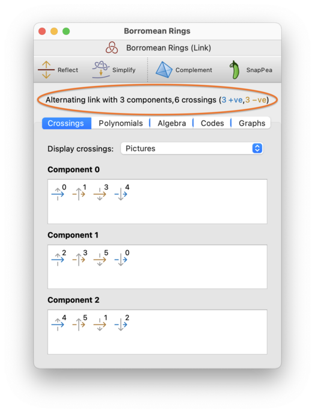
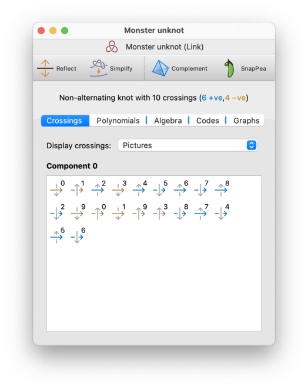
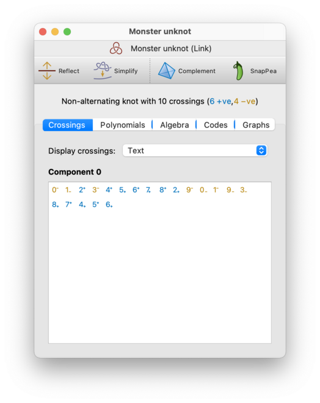
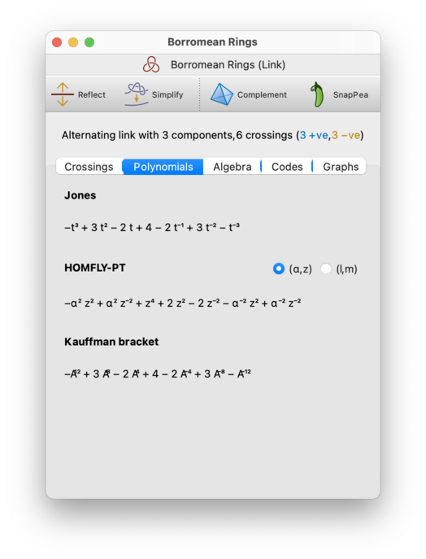
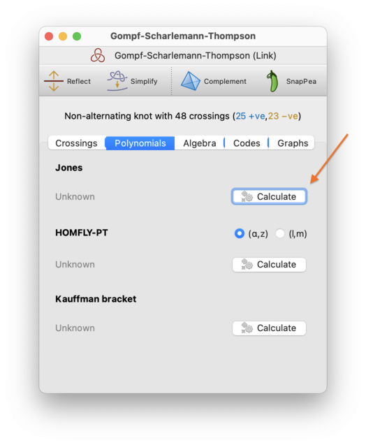
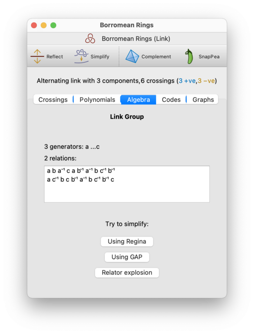
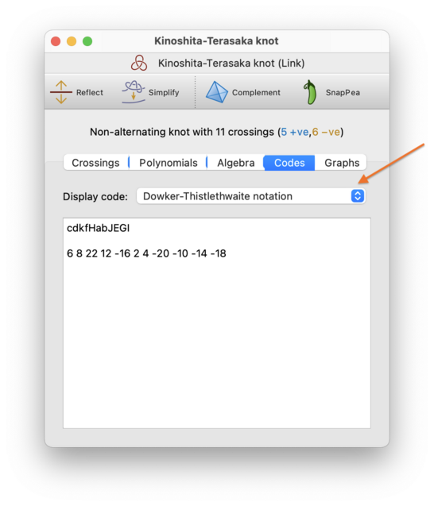
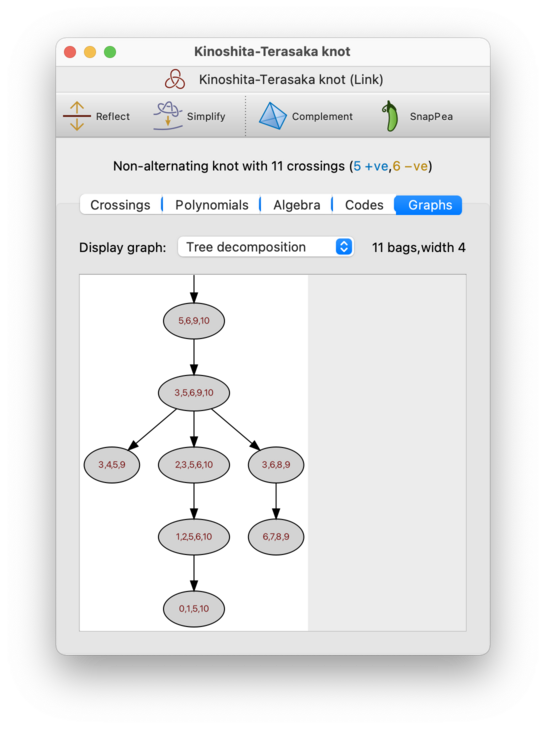
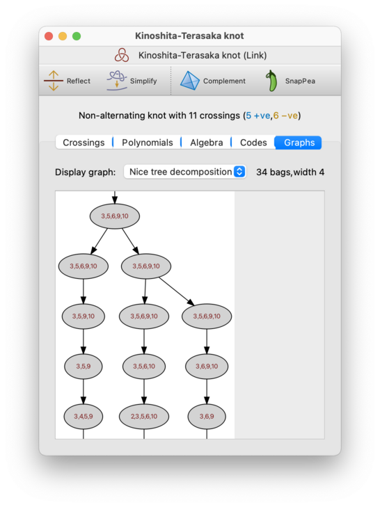
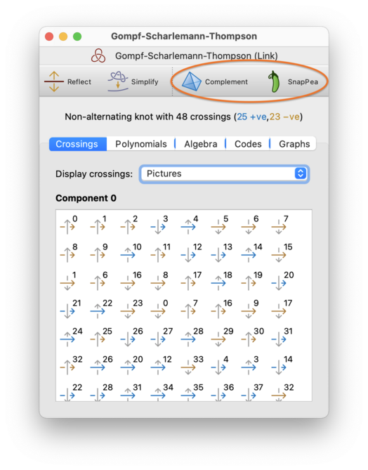

Analysis | |
| Prev | Knots and Links | Next |
You can view a variety of information about the link diagram, as well as topological invariants of the link itself, by stepping through the different tabs in the link viewer. Here we talk through the different kinds of information and invariants on offer.
At the top of each link viewer is a header listing: whether the knot is alternating; the number of link components (or the word “knot” to indicate just one); and the number of crossings, including how many are positive and negative. This header is circled in red below.

The Crossings tab shows the details of the individual crossings and components that make up the link. Regina numbers crossings 0,1,2,…, and likewise for components.
For each component of the link, there will be a box beneath the Crossings tab showing the crossings that you visit in order as you traverse the link component from an arbitrary starting point. There are two different ways that you can view this information (with a drop-down box to switch between them):
- Pictures
Each crossing will be shown visually as a pair of arrows, one crossing over the other. One arrow will be a solid colour, and will run horizontally from left to right; this is the part of the link that you are traversing. The other arrow will be grey, and will run vertically (either up or down); this is the part of the link that you are passing over or under. The crossing number will be written in the top-right corner beside the arrows.

For each crossing, the arrow that you are traversing will be coloured blue for a positive crossing, or yellow for a negative crossing. (This is just a visual aid, and is not strictly necessary; you can already tell the sign of the crossing from the arrangement of the arrows.)
Crossings are visited in order from left to right along each row of the display, one row at a time (i.e., the same way that you would read English text in a book).
Tip
Because the arrows you traverse always run from left to right, you can imagine the individual crossings as being attached together in the order that they are displayed. In other words, you can picture the link component as a long arrow running from left to right through the individual crossings (and then wrapping around to the next line each time it reaches the right-hand edge of the window). Of course this picture breaks down once you revisit the same crossing for a second time.
- Text
Each crossing will be shown as a number with a plus or minus sign attached. The number indicates which crossing you are passing through, and the sign indicates whether it is a positive or negative crossing. The sign will appear as a superscript if you are passing over the crossing, or a subscript if you are passing under.

As before, crossings are visited in order from left to right along each row, one row at a time. Also as before, positive crossings will be coloured blue and negative crossings will be coloured yellow (but again the colour is just a visual aid, since you already have this information from the plus/minus sign).
On the Polynomials tab, you can view several polynomial invariants of the link and of the link diagram.

The invariants include:
- Jones
The Jones polynomial is a single-variable polynomial in the variable
t, whose exponents are integers for knots, but whose exponents may be half-integers for some links (depending on the parity of the number of link components). You may therefore see this presented either as a polynomial intor as a polynomial in √t.If you have opted not to use unicode symbols, then you will see this as a polynomial in either
torsqrt_t.- HOMFLY-PT
The HOMFLY-PT polynomial is a two-variable polynomial with two common formulations: one in the variables (
α,z) and one in the variables (l,m). These formulations give different polynomials, which are related via a simple substitution. Regina offers a pair of buttons beside the HOMFLY-PT polynomial for you to choose which formulation is displayed.- Kauffman bracket
The Kauffman bracket is a property of the link diagram, not an invariant of the link, and is related to the Jones polynomial by a simple substitution. See Adams [Ada94] for a simple combinatorial introduction to the Kauffman bracket and the Jones polynomial.
For larger links, you may see a Calculate button instead of a polynomial. This is because all of these polynomials require exponential time to compute. In this case you will need to press the Calculate button and be prepared to wait (you will see the progress displayed, and you will have the opportunity to cancel the computation if you like).
For smaller links, all of the polynomials will be computed automatically.

Tip
You can copy any of these polynomials to the clipboard by right-clicking and selecting either Copy or Copy plain text. If you press Copy then the polynomial will be copied using unicode symbols, and if you press Copy plain text then the polynomial will be copied in plain ASCII symbols using a simple “pidgin TeX”.
Tip
If you find the polynomial exponents hard to read (due to the subscripts being very small), you can visit Regina's settings and disable unicode symbols. This will change the polynomial display to use a simple “pidgin TeX” instead.
On the Algebra tab, you can view other algebraic invariants of the link. Currently this shows the link group (i.e., the fundamental group of the link complement).

The link group is presented in the same format as the fundamental group of a triangulation, and you are given the same tools to simplify it. See the section on fundamental groups for further discussion of this.
Note that, although the link group is isomorphic to the fundamental group of the link complement, it is constructed differently and so will often have a different presentation. If you are having difficulty simplifying it, you could perhaps try working with the triangulated link complement instead.
Tip
If you find the exponents in the group presentation hard to read (due to the superscripts being very small), you can visit Regina's settings and disable unicode symbols. This will change the display to use a simple “pidgin TeX” instead.
The Text Codes tab allows you to export your knot or link in several text-based formats. Simply select a format from the drop-down box (indicated in the screenshot below), and the corresponding text code will be shown in the box beneath.

The codes that Regina can display include:
- Gauss codes
This displays both the classical and oriented Gauss codes. Classical Gauss codes are common in the literature, but they suffer from ambiguities related to orientation; for composite knots they may not even uniquely define the topology. Oriented Gauss codes solve this problem by adding a little more information.
For a more detailed description of both formats, see the section on creating knots from Gauss codes.
Currently Regina only displays Gauss codes for knots, not multiple component links.
- Dowker-Thistlethwaite notation
Like classical Gauss codes, Dowker-Thistlethwaite notation is also common in the literature, and also suffers from ambiguities related to orientation and composite knots. Dowker-Thistlethwaite notation comes in two forms—numerical and alphabetical—and Regina displays both forms here.
For a more detailed discussion of Dowker-Thistlethwaite notation, see the section on creating knots from Dowker-Thistlethwaite notation.
Currently Regina only displays Dowker-Thistlethwaite notation for knots, not multiple component links. Be aware that alphabetical Dowker-Thistlethwaite notation is case-sensitive (i.e., upper-case and lower-case matters).
- Knot signature
Knot signatures are Reginas own text-based format, and were designed to have a combinatorial uniqueness property: two knot diagrams have the same signature if and only if they are combinatorially isomorphic (which includes relabelling crossings, reflecting, rotating and/or reversing the knot).
For a more detailed discussion of knot signatures, see the section on creating knots from knot signatures.
Currently Regina only displays knot signatures for knots, not multiple component links. Be aware that knot signatures are case-sensitive (i.e., upper-case and lower-case matters).
- Planar diagram codes
This displays the planar diagram code for the link. Unlike most of the codes here, planar diagram codes support multiple-component links. Their main limitations are that they cannot represent zero-crossing unknot components, and they cannot fix the orientation of a link component that consists entirely of over-crossings.
For a detailed description of planar diagram codes, see the section on creating links from planar diagram codes.
- Jenkins format
This is a multiline text code described by Bob Jenkins, and used in his HOMFLY-PT polynomial software. Regina can happily display the Jenkins format for multiple-component links.
In this format, a link is described by a sequence of integers separated by whitespace. We assume that there are
ncrossings in the link, labelled arbitrarily as 0,1,2,…. The sequence of integers will contain, in order:the number of components in the link;
for each link component:
the number of times you pass a crossing when traversing the component (i.e., the length of the component);
for each link component: two integers for each crossing that you pass in such a traversal: the crossing label, and then either +1 or -1 according to whether you pass over or under the crossing respectively;
for each crossing:
the crossing label;
the sign of the crossing (either +1 or -1).
For all of these text codes except for Jenkins format, you can convert a text code back into a link as described in creating a new link. Be aware that the resulting link might not use the same crossing numbers, and might even be a reflection and/or reversal of the original.
For Jenkins format, Regina's graphical user interface does not offer a
way to convert a code back into a link; however, you can always bring up
a Python console and call the
function Link::fromJenkins() instead.
On the Graphs tab, you can view different graphs associated with the link diagram. These graphs are all related to the diagram graph, which is a 4-valent graph with one vertex for each crossing and edges that follow the strands of the link.
There is a drop-down box for you to choose which graph you want to see. The options are:
- Tree decomposition
A tree decomposition (illustrated below) models the diagram graph using a rooted tree; you can read more about tree decompositions in the triangulations chapter. Regina uses these tree decompositions in its fixed-parameter tractable algorithms for the Jones and HOMFLY-PT polynomials [Bur18].

Regina will display both the width and the number of bags above the tree decomposition itself.
As with triangulations, Regina does not guarantee to find a tree decomposition of the smallest possible width (i.e., it does not compute the precise treewidth of the diagram graph). Instead it uses fast heuristics that are found to produce low-width graphs in practice.
- Nice tree decomposition
This is a variant of the tree decomposition that is less concise, but more useful in practice for algorithms since it imposes very tight constraints on the relationships between parent and child bags. Again, you can read more about these in the triangulations chapter.

As with tree decompositions, Regina will display both the width of the nice tree decomposition and the number of bags that it contains. Typically the width will be the same as for the (plain) tree decomposition above, but the number of bags may be significantly larger (though still linear in the overall number of crossings).
Regina can do a lot more with 3-manifold triangulations than with knots and links directly. If you want access to these more powerful 3-manifold tools, you can build a triangulation of the link complement.
The result will be an ideal 3-manifold triangulation, describing the complement of your link in the 3-sphere.
There are two ways you can build a link complement:
If you select → from the menu, or press the Complement toolbar button (circled below), Regina will use its own implementation to create a native Regina triangulation of the complement. The triangulation will have access to the full suite of Regina's tools for triangulations, but the meridian and longitude curves from the diagram will be forgotten.
If you select → from the menu, or press the SnapPea toolbar button (also circled below), Regina will pass the link to the SnapPea kernel to triangulate instead; the result will be a hybrid SnapPea triangulation. The peripheral curves from the diagram will be preserved in SnapPea's data structures; however, the available tools for working with the triangulation combinatorially will be more limited. See the introduction to the chapter on SnapPea triangulations for more information on these limitations.
Regardless of which method you use, the new triangulation will be inserted immediately beneath your link in the packet tree.

| Prev | Contents | Next |
| Knots and Links | Up | Modification |